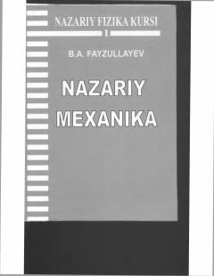

NMUniversitetlar uchun klassik nazariy mexanika fanidan darslik.
Mazkur darslik universitetlarning fizika yo'nalishi talabalari uchun mo'ljallangan bo'lib, klassik nazariy mexanika masalalariga bag'ishlangan. Kitobda Lagranj va Gamilton formalizmlari, tebranishlar nazariyasi hamda qattiq jism harakati asoslari batafsil bayon etilgan. Shuningdek, u fizika fakulteti talabalari va sohaga qiziquvchi mutaxassislar uchun muhim o'quv qo'llanma hisoblanadi.